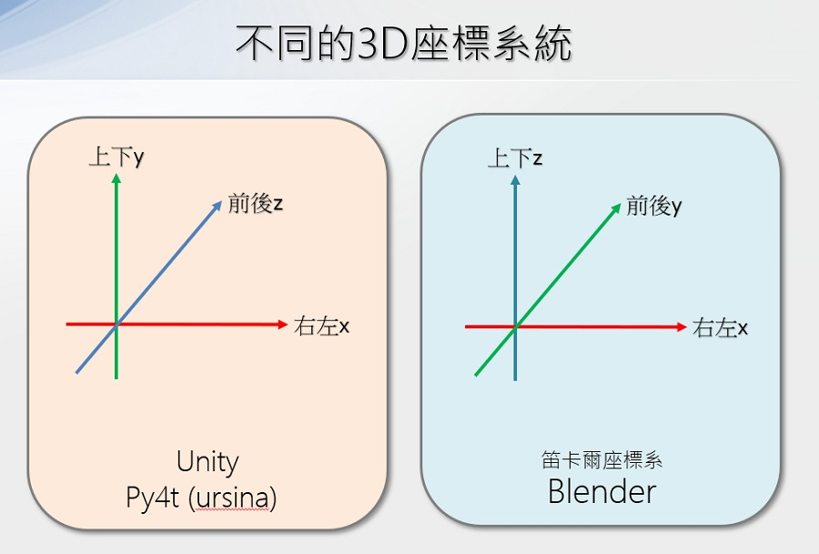
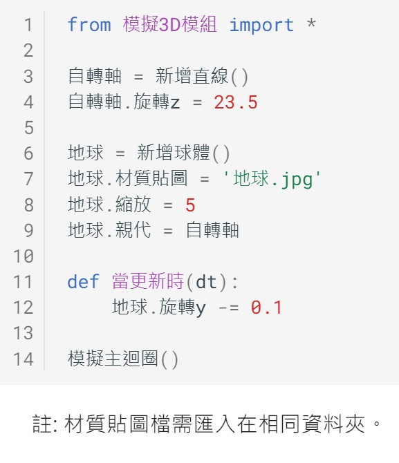
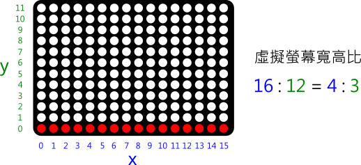
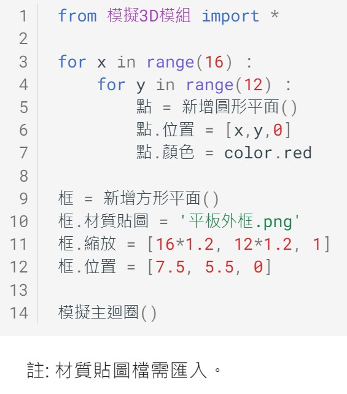
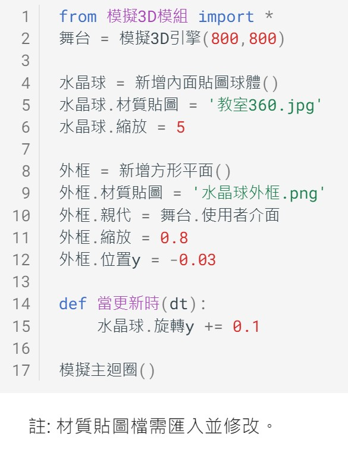
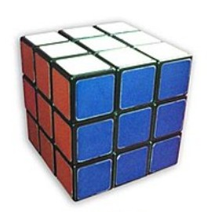

📚 探索3D空間
- 我們人類生活的地方，就是一個3D的立體空間。比起平面來說，空間中的位置、長度與角度…等更是複雜。近年來，由於3D硬體加速與軟體的發展，利用資訊科技來計算模擬3D已變得容易許多。所以不管在遊戲、VR、AR、電影、工業設計、生物科技、建築展示…等許多領域，都可以看到3D技術的運用。
-

在這個課程中，我們將從基礎開始，透過Python程式的撰寫活動，一起來學習3D程式並體驗其樂趣。
關於3D程式
📙 3D基礎(3)
- 3D的基礎是什麼？先從3D圖形設計者的角度來瞭解：
-
(1分33秒, 選中文字幕, 資料來源:3)
空間座標與位置
3D也可稱為3維空間，是由右左、上下、前後3個維度(3 Dimensions)所構成的空間。
- 在3D空間中，要如何將物體定位呢？想一想，在平面的空間(2維)，我們會使用x與y座標來做為定位。從這樣的概念延伸，就可以用xyz的座標，做為空間中的定位。不過，空間座標中的xyz，分別是代表哪些維度呢？
-

- 為了讓學習者容易理解3D程式，Py4t內建了座標與攝影機(視角)的輔助操作，幫助我們了解與驗証3D模擬空間。輔助的操作如下：
-

- 當3D空間的模擬物體，投影至2D畫面時(如觀看者的螢幕)，可以分成透視與正交投影2種方式：
-
(資料來源:4)
跟著範例，寫出空間位置的程式。
3D基礎 範例 (1/3 新檔) --- 空間座標與位置

3軸縮放與旋轉
- 藉由3D的模擬，我們可以將3D模型，依xyz三個軸向來做出縮放與旋轉的動作，如下圖：
-

一起來寫寫看縮放與旋轉的程式。
3D基礎 範例 (2/3 新檔) --- 3軸縮放與旋轉

顏色與材質貼圖
- 電腦的影像經由螢幕發光後，被使用者看見。光的顏色由基本的紅、綠、藍三個色光混合而成，又稱為RGB三原色。
-

- 透過平面的材質貼圖，對應到3D物體中的不同多邊形的平面上，可以讓3D模型更加的生動有趣。
-
(1分43秒, 資料來源:5)
一起動手實作出程式，控制3D物體的顏色與材質。
3D基礎 範例 (3/3 新檔) --- 顏色與材質

📕 轉動地球(2)
- 地球自轉
地球是我們居住的星球，也是宇宙中人類已知唯一存在生命的天體。
地球的轉動會造成日夜的變化，它是如何轉動的呢？
-
(45秒, 資料來源:6)
從影片中可以得知，地球的自轉規則如下：

-
(資料來源:6)
標示地球自轉
- 匯入Py4t的地球材質貼圖，並利用繪圖軟體(如小畫家)，標示出赤道以及地球的自轉方向。
關於赤道
試著做出地球的自轉程式。
轉動地球 範例 (1/2 新檔) --- 地球自轉
關於 Google Earth
- 是一款Google公司開發的虛擬地球儀軟體，它將衛星圖、航空照相和GIS資料疊加在地球的三維模型上
- Google Earth
地球傾斜
- 在自然教室或地科教室中，常常可以看到地球儀，是一個用來表示地球的球體模型。
-

-
(資料來源:7)
為什麼地球儀中的地球是傾斜的呢？
-
(33秒, 資料來源:8)
由於地球的公轉與傾斜，產生了一年四季的變化。
-
(資料來源:8)
如何在程式中做到地球繞著軸自轉，並且自轉軸也傾斜呢？讓我們來了解3D物體的親子關係。
請試著寫出地球傾斜的程式。
轉動地球 範例 (2/2 接續) --- 地球傾斜

更多練習
- 1.請利用範例材質中的地球儀外框以及3D的角柱或圓柱，在3D空間中調整位置與縮放倍率，組成一個地球儀。
- 2.這幾年的疫情對全球產生巨大的影響，生活在台灣的我們也都有切身的感受，請在地球材質貼圖上，寫下你對疫情的祝福與希望。
📘 漸層螢幕(2)
- 虛擬螢幕
- 在賣場的展售顯示器，常常會條列出相關的規格，比如螢幕的尺寸、比例與解析度。
-
(資料來源:9)
如上圖，解析度720p，代表螢幕的寬有1280個點，高有720個點，這些點又稱為畫素(pixel)，是影像顯示的基本單位。
請利用3D程式做出一個虛擬螢幕(規格如下)：

漸層螢幕 範例 (1/2 新檔) --- 虛擬螢幕

彩色漸層
- 油畫是西方繪畫史中的主要繪畫方式。由於油畫顏料不透明，覆蓋力強，繪畫時可以由深到淺，逐層覆蓋，使繪畫產生立體感，畫出豐富、逼真的色彩。
-

-
(資料來源:10)
利用不同油畫顏料的比例混合，改變顏色的飽和度，可以調製出顏色漸漸改變的漸層色：
-
(2分15秒, 資料來源:11)
電腦的顯示器，將不同強度的紅、綠、藍色光混合來生成不同的顏色，這就是RGB三原色的加色法，但這種顏色對大多數人來說並不直覺，比如我們很難直接判斷出橘色的RGB比例。
- HSV是另一種色彩的模型，它代表的是色相、飽和度與明度。以人類更熟悉的方式來表達顏色：「這是什麼顏色？深淺如何？明暗如何？」。
-

-
(資料來源:12)
認識了HSV色彩空間後，要怎麼做出漸層色呢？

綜合以上，請寫出漸層顏色的程式。
漸層螢幕 範例 (2/2 接續) --- 彩色漸層

更多漸層練習
- 1.可以改變漸層的方向嗎？做出如上下或斜向的漸層嗎？
- 2.可以改變漸層的顏色嗎？如紅綠漸層、綠藍漸層等。

📙 360水晶球(2)
- 360全景相片
- Google街景圖(由Google公司開發)，提供水平方向360°及垂直方向180°的街道全景，讓使用者能檢視所選城市地面上街道不同位置及其兩旁的景物，由Google街景車拍攝了許多的360度全景照片所構成。
-
(資料來源:Google地圖街景服務)
- 如何產生360全景相片呢？其中一種方法是透過相機的魚眼鏡頭，1顆魚眼鏡頭可拍下 180 度的環境，同時使用 2 顆的話，就可以拼接出 360 度的全景照片。
-

請用3D程式做出360全景相片。
360水晶球 範例 (1/2 新檔) --- 全景相片
建構中…
全景水晶球
- 水晶球是指由水晶或玻璃製作的球體，在古代是被用來宗教、占卜，也可當成魔術的道具。
-
(資料來源:13)
- 抬頭顯示器(HUD)是一種目前普遍運用在航空器上的飛行輔助儀器，飛行員不需要低頭查看儀表就能夠看到需要的資訊。部分汽車也以類似的裝置。在電子遊戲領域中，HUD是使用者介面的一部分。
-

-
(資料來源:14)
- 3D程式的使用者介面(UI)有自己獨立的座標，如下圖：
請將水晶球的照片，以HUD的使用者介面方式，再加上全景照片，就可以做出一個特別的水晶球，一起來寫寫看。
360水晶球 範例 (2/2 接續) --- 水晶球
建構中…

📗 魔術方塊(2)
- 魔方模型
魯比克·厄爾諾是匈牙利的建築學和雕塑學教授，為了幫助學生們認識空間立方體的組成和結構，所以他自己動手做出了第一個魔術方塊的雛形來，其靈感是來自於多瑙河中的沙礫。
1974年，魯比克教授發明了第一個魔術方塊，1980年Ideal Toys公司於販售此玩具，並將名稱改為Rubik's Cube。
-

-
(資料來源:15)
- 常見的魔術方塊為3x3x3(長寬高)，官方配色有6色，並有固定排列
-

-
(資料來源:15)
利用3D程式，把魔術方塊的外觀模型建立起來，一起動手做做看！
魔術方塊 範例 (1/2 新檔) --- 魔方模型
建構中…
練習 自訂材質
- 匯入自訂材質，並用繪圖軟體設計客製化圖案的魔方
更多練習
- 1.市面上有4x4x4或5x5x5的魔術方塊，可以用程式做出來嗎？
- 2.魔術方塊常常一不小心就轉亂了，可以做出轉亂過的魔方嗎？
單層轉動
- 魔術方塊可以轉動，不過常常一不小心就轉亂了。
-

-
(資料來源:15)
- 為了記錄下復原、轉亂的過程或公式的步驟，由David Singmaster發明了以下的書寫法式：
-
- R(Right)、L(Left)、U(Up)、D(Down)、F(Front)、B(Back)分別代表右、左、上、下、前、後層。
-
- 若是順時針旋轉，則直接寫上符號；若是逆時針旋轉，則在符號後加上「'」或是「i」；若是旋轉180°，則在符號後加上「2」或是「²」。
(資料來源:15)
- 如果要讓魔方程式做出如上圖的「U的轉法」，要怎麼做呢？
請動手寫出程式。
魔術方塊 範例 (2/2 接續) --- 單層轉動
建構中…
更多練習
- 修改程式，做出不同的轉法，如R(右)、L(左)、U(上)、D(下)、F(前)、B(後)等。
-
人腦中央溝, By Polygon data were generated by Database Center for Life Science(DBCLS), 維基百科連結 ↩
-
UV Maps Explained, By FlippedNormals Marketplace, youtube連結 ↩
-
16:9 aspect ratio, 維基百科連結. Computer monitor, https://en.wikipedia.org/wiki/Computer_monitor ↩
-
Tutorial : Hue, Value & Saturation , By CITY STATIONERY GROUP SAL , youtube連結 ↩
{kind=link}
{kind=link}
{kind=link}